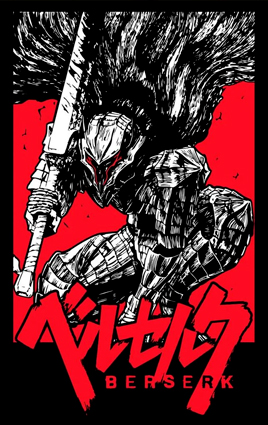

Berserk
1989 • Mangá
Guts é um sobrevivente que vaga pelo mundo à procura de respostas. Antigo membro do "Bando dos Falcões", um grupo mercenário de cavaleiros e guerreiros liderado por Griffith e Caska, Guts se adentra na história que ganha corpo e emerge sob um ponto de vista totalmente imprevisível, a medida que os acontecimentos vão se completando. É uma obra dedicada à eterna luta do Catolicismo contra Paganismo....
